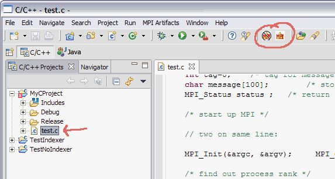
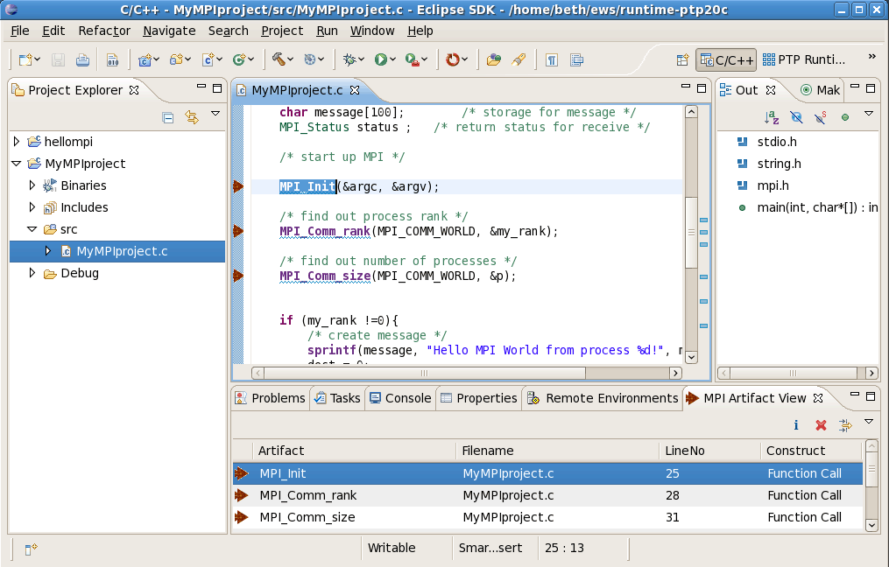
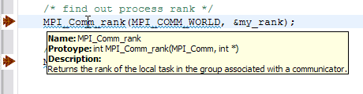
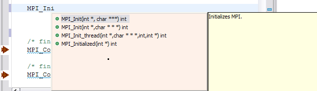

Running the MPI Tools within the Parallel Language Development Tools
To run the PTP PLDT MPI Tools,
create a project (e.g a Managed Make C project), and
set the preferences and include paths as described in
Setup for PTP MPI Tools.
The Parallel Language Development Tools work on Standard Make C projects as well, and
on C++ projects (Standard Make and Managed Make). The description here is for
a Managed Make C Project.
- Within the project, create a C file that includes MPI code. A sample is testMPI.c
Note: A sample C++ file with MPI calls
is testMPIcpp.cpp.
A sample C++ file with MPI calls in ordinary C style
is helloMPI_c_style.cpp.
- Select the source file to analyse, to find the MPI artifacts.
Click the MPI button
 in the tool bar.
in the tool bar.

- The MPI Artifact View is opened, if it was not present.
It is
populated with MPI artifacts found.

If no artifacts are found, check that:
- The MPI preferences page lists the include file for the MPI installation
that your source code uses. This list is how the analysis determines what is
an "MPI artifact."
- Your project properties have the include path (the same one listed
in the MPI preferences page) listed.
Note that the MPI analysis may require this even if
the build procedure - such as a build command like 'mpicc' -
implicitly does this include for you during build.
- Double click on any line in the MPI Artifact View
to navigate the editor to that line in the source file.
- Hover over the MPI Artifact identified in the source file
(by blue squiggles) to see additional information about that
function call, for example.

- Rows in the MPI Artifact View can be sorted by any of the columns.
Click on the column heading to sort.
- Click the "Clear MPI Artifacts Markers" button
 in the tool bar to remove all
the MPI artifacts.
in the tool bar to remove all
the MPI artifacts.
- You can run the analysis on another file and its markers
will be added to the view.
- You can run the analysis on more than one file (multiple selection)
or a container (folder or project), to analyse more than one file at a time.
Click on a project or a folder, then click the
MPI button
to run it on all C source files in that folder.
- Content Assist
Type an incomplete MPI function name e.g. "MPI_Ini"
and hit Ctrl-Space. The information that is shown
is populated with CDT completions including argument
types, but in addition, the PTP-MPI tools also provide
specific information about actual MPI constant values, etc.
where appropriate, and a yellow popup with additional
textual descriptive information about the function.

- Content sensitive help
Also, if F1 is pressed when the cursor is within
a function name, a help view appears which shows additional information.

Help View appears:

Click on the function name to see more information:

That concludes the description of the MPI features.
See also the OpenMP setup information
or the OpenMP run information.
Back to Top | Back to Table of Contents